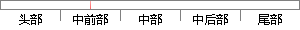

而纸质问卷的回收率则取决于被访问的读者范围、问卷调查的目的、和问卷发放方法。
片段位置图

相似结果|
1
原句片段：而纸质问卷的回收率则取决于被访问的读者范围、问卷调查的目的、和问卷发放方法。
相似片段 1：而纸质问卷的回收率 写入到关系数据库 中; 在调查结束后, 自动删除各服务器上的调查问卷 则取决于被访问的读者范围、 问卷调查的 目的、 和问卷发放方法 。 ...
|
※ 片段修改建议 ※
近似词参考：- 质问：诘责
- 访问：拜候 会见 接见 走访
- 范围：规模 局限 范畴
- 目的：目标
- 方法：方式 要领 法子
系统自动生成语句：而纸诘责卷的回收率则取决于被拜候的读者规模、问卷调查的目标、和问卷发放方式。
注：本片段修改建议为系统自动生成，仅供参考。